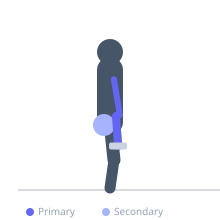
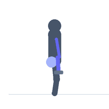

Exercise guide / Zottmann Curl
Zottmann Curl
The Zottmann curl is a dumbbell curl variation that uses a supinated (underhand) grip on the way up and pronates to an overhand grip on the way down. This technique effectively trains the biceps brachii during the concentric curl and the brachioradialis and forearm extensors during the controlled pronated eccentric. It is a time-efficient method for developing the full upper arm musculature in a single movement.
Primary muscles
biceps brachii long head
biceps brachii short head
brachioradialis
Secondary muscles
brachialis
extensor carpi radialis
Equipment
Dumbbell (Fixed)


Starting position
- Stand upright holding dumbbells at the sides with a supinated (underhand) grip. Arms fully extended, feet shoulder-width apart.
Setup
- Select moderate dumbbells — lighter than your standard curl weight since you will be controlling the eccentric in a pronated position.
Steps
- Step 1: Hold dumbbells at the sides with a supinated grip. Stand tall, upper arms at the sides.
- Step 2: Exhale and curl the dumbbells upward with a supinated grip (biceps curl) to full contraction at shoulder level.
- Step 3: At the top, rotate the wrists 180 degrees into a pronated (overhand) grip.
- Step 4: Inhale and slowly lower the dumbbells back to the starting position in the pronated position, then rotate back to supinated for the next rep.
Coaching cues
- Biceps up, reverse grip down — that is the cue for the two-phase movement
- Make the rotation at the top smooth — your forearms rotate, not your whole arm
Breathing
- Exhale on the curl up; inhale on the pronated lowering.
Range of motion
- Full extension at start; full curl at top; full controlled descent in pronated grip.
Tempo
- 2-0-3-0 (3-second pronated eccentric)
Common mistakes
- Rushing the rotation at the top — perform it deliberately and smoothly
- Lowering too quickly in the pronated position — the eccentric is where the forearm work happens
Safety
- Avoid excessive wrist pronation if pain is felt in the elbow — use lighter weight
Training
- hypertrophy: 8–15 reps
- endurance: 12–20 reps
- hypertrophy: 3–4 sets
- endurance: 2–3 sets
- Rest: {'hypertrophy': 75, 'endurance': 45}